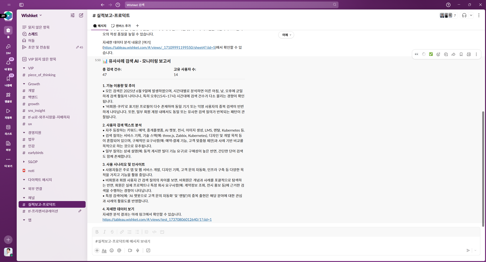

① 가설 정교화
"추측이 아니라, 고객-데이터로 문제를 정의합니다."
초기 3시간 워크숍으로 행동·매출 로그를 연결해 근거 있는 가설을 만듭니다.
가설 정확도 71% ↑

② 즉시 가시화
"한 화면에서 성장 상태를 가시화합니다."
CMO·PO 모두가 이해하는 언어·지표로 KPI를 그립니다.
의사결정 속도 3배 ↑

③ AI 조기 경보
"리스크를 '발생 후'가 아닌 '발생 전'에 잡습니다."
AI가 이상패턴을 감지해 슬랙·이메일로 실시간 알림을 전송합니다.
리드타임 2주 → 3일

④ Growth Loop
"실험-학습-확산이 돌아가는 Growth-Loop 구축."
전사 공통 KPI를 정의해 속도감 있는 의사결정을 지원합니다.
평균 23% 전환율 ↑